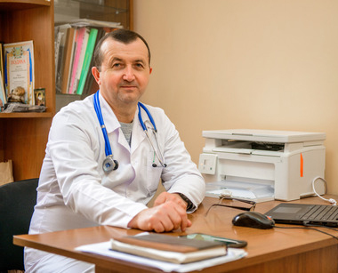
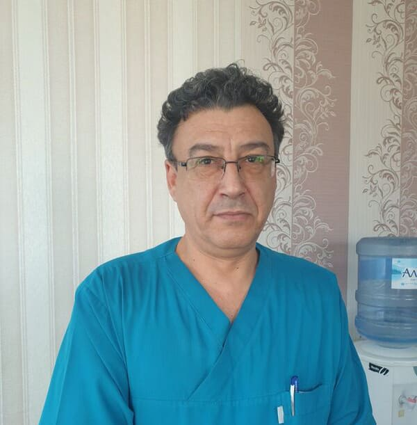
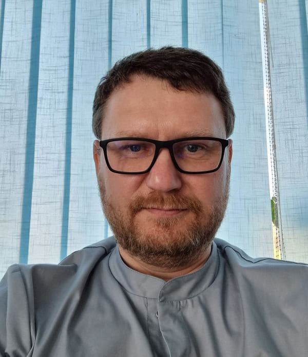
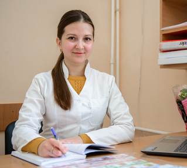
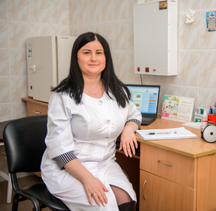
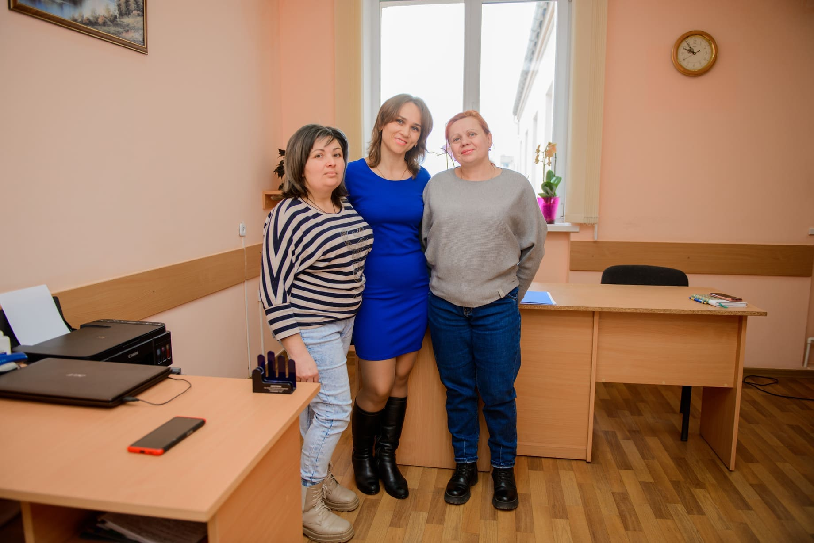
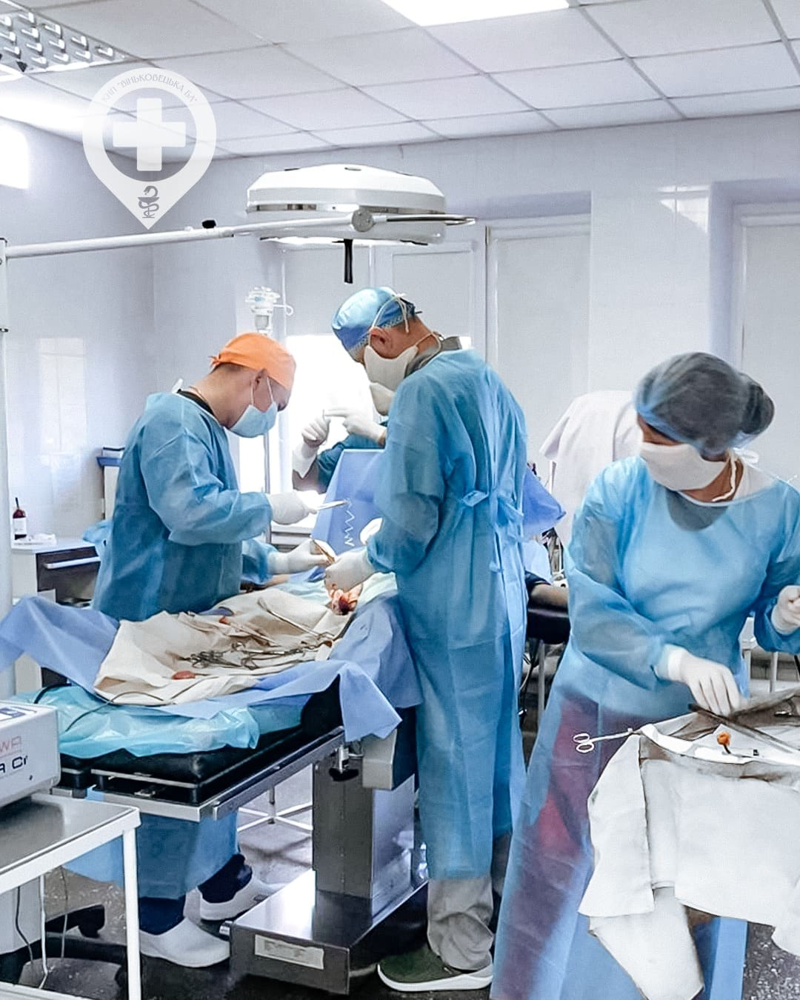

-
Аптека на території
-
Швидка допомога
-
Новітнє обладнання
-
Кваліфіковані лікарі
Вітаємо у КНП "Віньковецька БЛ"
Історія нашої лікарні розпочинається зі створення Віньковецького району Хмельницької області, який був утворений 7 березня 1923 року.З тих пір започатковує своє існування й Віньковецька районна лікарня,що формується на базі місцевого медичного пункту. Історія розпочинається ще із земської медицини.У метушні сьогоднішнього життя,питання здоров'я часто відходять на другий план. І згадуємо ми про себе, лише коли стає зовсім погано. Ось тоді нам в більшості випадків вже не обійтися без втручання фахівця. І лікарі щодня роблять все можливе, а часом і неможливе, допомагаючи нам знову повернутися до нормального,звичного життя.
Наші відділення
-
Загальнохірургічне
Хірургія – один із найважливіших напрямів у медицині, який займається лікуванням різних органів та систем людського організму шляхом оперативного втручання.
-
Приймальне
Приймальне відділення – важливе лікувально-діагностичне відділення, призначене для реєстрації, прийому, первинного огляду, санітарно-гігієнічної обробки хворих і надання кваліфікованої (невідкладної) медичної допомоги.
-
Дитяче
Турботу про здоров'я наших маленьких пацієнтів ми довіряємо тільки надійним дитячим лікарям. У нас можна пройти діагностичне обстеження і лікування дітей від народження до 18 років.
-
Загальнотерапевтичне
Процес лікування стосовно хворого проводить кваліфікований лікар певної спеціалізації залежно від конкретного захворювання.
-
Інфекційне
Щодня боротьбу із невидимим і небезпечним ворогом ведуть лікарі-інфекціоністи, медсестри та молодший медичний персонал інфекційного відділення , які чесно виконують свій лікарський обов’язок, не сподіваючись на аплодисменти за свою роботу.
-
Рентгенологічне
Відділення укомплектоване висококваліфікованими лікарями, які володіють всіма методами рентгенологічних досліджень.
-
Амбулаторно - консультативне
Лікарі амбулаторно-консультаційного відділення — це фахівці переважно першої та вищої категорій. Персонал регулярно проходить навчання на курсах підвищення кваліфікації та бере участь у профільних науково-практичних заходах.
-
Клінікодіагностична лабораторія
КДЛ оснащена сучасними автоматичними та напівавтоматичними аналізаторами, що дозволяє застосовувати сучасні методи лабораторної діагностики та забезпечувати якість виконаних досліджень.
-
Відділення анестезіології та інтенсивної терапії ( ВАІТ )
Відділення анестезіології та інтенсивної терапії є структурним підрозділом багатопрофільної лікарні інтенсивного лікування , в якому забезпечуються анестезія та інтенсивна терапія хворим усіх вікових категорій із захворюваннями, які потребують або не потребують хірургічного втручання та супроводжуються розладами вітальних функцій або загрозою їх виникнення.
Послуги
-
Медичні огляди
-
Профілактичні медичні огляди працівників харчової, тютюнової, фармацевтичної та переробної промисловості, підприємств торгівлі, громадського харчування, закладів освіти всіх рівнів, лікувально-профілактичних закладів для дорослих, пологових будинків (відділень), дитячих лікарень (відділень), відділень патології новонароджених, недоношених, пралень, перукарень, косметичних та масажних кабінетів, лазень, саун, готелів, закладів культури, розважальних закладів, очисних та каналізаційних споруд, транспортно-дорожнього комплексу, рибного господарства, суб'єктів господарювання, що займаються розведенням, вирощуванням і реалізацією тварин та працівників, які надають приватні послуги вдома224,40 грн
-
Профілактичні медичні огляди працівників, зайнятих на важких роботах, роботах із шкідливими чи небезпечними умовами праці або таких, де є потреба у професійному доборі, закладів державної санітарно-епідеміологічної служби, закладів охорони здоров'я, військово-лікарських та відповідних комісій міністерств та інших центральних органів виконавчої влади (які здійснюють медичні огляди працівників), спеціалізованих закладів охорони здоров'я (які мають право встановлювати діагноз щодо професійних захворювань), робочих органів виконавчої дирекції Фонду соціального страхування від нещасних випадків на виробництві та професійних захворювань України, працівників віком до 21 року підприємств, установ, організацій та їх філій, інших відокремлених підрозділів та фізичних осіб – суб'єктів підприєм-ницької діяльності, які відповідно до законодавства використовують найману працю, а також осіб, які забезпечують себе роботою самостійно154,00 грн
-
Профілактичні медичні огляди працівників, які здійснюють роботи: верхолазні і ті, які пов'язані з підійманням на висоту, з обслуговування підіймальних механізмів, з оперативного обслуговування і ремонту діючих електроустановок (напругою 127 В і вище змінного струму та 110 В постійного струму), монтажні та налагоджувальні, дослідження та вимірювання в електроустановках, на механічному обладнанні, у лісовій охороні, по валу, сплаву, транспортуванню та первинній обробці лісу, у вибухово- і пожежонебез-печних виробництвах, а також роботи, що пов'язані з обслуговуванням ємностей під тиском та з застосуванням вибухових речовин165,00 грн
-
Профілактичні медичні огляди працівників нафтової та газової промисловості, військової охорони, служб спецзв'язку, апарату інкасації, банківських структур, газорятувальної служби, пожежної охорони, аварійно-рятувальної служби (роботи) з ліквідації надзвичайних ситуацій природного та техногенного характеру та інших закладів та служб, яким дозволено носити вогнепальну зброю та її застосовувати195,00 грн
-
Попередні медичні огляди для отримання посвідчення водія транспортних засобів246,60 грн
-
Періодичні медичні огляди для отримання посвідчення водія транспортних засобів211,80 грн
-
Передрейсові та післярейсові медичні огляди водіїв транспортних засобів34,20 грн
-
Медичні огляди для отримання дозволу на об’єкт дозвільної системи219,00 грн
-
Профілактичний гінекологічний огляд з проведенням бактероскопічного дослідження мазку92,40 грн
-
-
Масаж
-
Масаж комірцевої зони (задньої поверхні шиї, спини до рівня IV грудного хребця, передньої поверхні грудної клітки до ІІ ребра)36,00 грн
-
Масаж верхньої кінцівки36,00 грн
-
Масаж спини (від VII шийного до І поперекового хребця та від лівої до правої середньої аксилярної лінії, у дітей – включно з попереково-крижовою ділянкою)36,00 грн
-
Масаж нижньої кінцівки36,00 грн
-
масаж шийно-грудного відділу хребта (області задньої поверхні шиї та області спини до поперекового хребця від лівої до правої задньої аксилярної лінії)43,20 грн
-
Масаж шиї27,60 грн
-
Масаж спини і поперекового відділу (від VII шийного хребця до крижової ділянки, від лівої до правої середньої аксилярної лінії)36,00 грн
-
-
Бактеріологічні дослідження
-
Бактеріологічні дослідження на кишкові інфекції181,50 грн
-
Бактеріологічні дослідження на носійство збудника черевного тифу129,50 грн
-
Бактеріологічні дослідження на носійство патогенного стафілококу74,50 грн
-
Дослідження нальоту зі слизових оболонок зіву, пробки мигдаликів, мокротиння, сечі, спинномозкової рідини, крові, жовчі, гною відкритих і закритих осередків ураження, випорожнень, зіскребів з нігтів, лусочок шкіри, секційного матеріалу на гриби з позитивним результатом121,00 грн
-
Дослідження нальоту зі слизових оболонок зіву, пробки мигдаликів, мокротиння, сечі, спинномозкової рідини, крові, жовчі, гною відкритих і закритих осередків ураження, випорожнень, зіскребів з нігтів, лусочок шкіри, секційного матеріалу на гриби з негативним результатом109,00 грн
-
Дослідження на стрептокок нальоту зі слизових оболонок зіву, пробки мигдаликів, мокротиння, сечі, спинномозкової рідини, крові, жовчі, гною відкритих і закритих осередків ураження, випорожнень, зіскребів з нігтів, лусочок шкіри, секційного матеріалу з позитивним результатом155,00 грн
-
Дослідження на стрептокок нальоту зі слизових оболонок зіву, пробки мигдаликів, мокротиння, сечі, спинномозкової рідини, крові, жовчі, гною відкритих і закритих осередків ураження, випорожнень, зіскребів з нігтів, лусочок шкіри, секційного матеріалу з негативним результатом132,50 грн
-
Дослідження випорожнень на умовно-патогенну флору (кишкова група) з позитивним результатом457,50 грн
-
Дослідження випорожнень на умовно-патогенну флору (кишкова група) з негативним результатом155,00 грн
-
Дослідження випорожнень на шигели, сальмонели з позитивним результатом478,50 грн
-
Дослідження випорожнень на шигели, сальмонели з негативним результатом181,00 грн
-
Дослідження випорожнень на лактобактерії з позитивним результатом65,00 грн
-
Дослідження випорожнень на лактобактерії з негативним результатом47,00 грн
-
Дослідження випорожнень на біфідобактерії з позитивним результатом56,00 грн
-
Дослідження випорожнень на біфідобактерії з негативним результатом49,00 грн
-
Дослідження крові на стерильність з позитивним результатом312,00 грн
-
Дослідження сечі на мікрофлору та чутливість до антибіотиків з позитивним результатом569,50 грн
-
Дослідження сечі на мікрофлору та чутливість до антибіотиків з негативним результатом160,00 грн
-
Дослідження виділення з очей на мікрофлору та чутливість до антибіотиків з позитивним результатом580,50 грн
-
Дослідження виділення з очей на мікрофлору та чутливість до антибіотиків з негативним результатом171,00 грн
-
Дослідження виділення з статевих органів на мікрофлору і чутливість до антибіотиків з позитивним результатом635,00 грн
-
Дослідження виділення з статевих органів на мікрофлору і чутливість до антибіотиків з негативним результатом196,00 грн
-
Дослідження матеріалу з дихальних шляхів (зів, ніс, мокрота) на мікрофлору та чутливість до антибіотиків з позитивним результатом584,50 грн
-
Дослідження матеріалу з дихальних шляхів (зів, ніс, мокрота) на мікрофлору та чутливість до антибіотиків з негативним результатом160,00 грн
-
Дослідження калу на дисбактеріоз та чутливість до антибіотиків з позитивним результатом814,00 грн
-
Дослідження калу на дисбактеріоз та чутливість до антибіотиків з негативним результатом177,00 грн
-
Дослідження виділення з рани на мікрофлору та чутливість до антибіотиків з позитивним результатом617,00 грн
-
Дослідження виділення з рани на мікрофлору та чутливість до антибіотиків з негативним результатом141,00 грн
-
-
Аналізи крові
-
Визначення альбуміну в сироватці крові22,50 грн
-
Визначення загального білку в сироватці крові24,50 грн
-
Визначення креатиніну в сироватці крові49,00 грн
-
Визначення альфа-амілази в сироватці крові36,50 грн
-
Визначення білірубіну в сироватці крові43,50 грн
-
Визначення глюкози крові25,00 грн
-
Визначення тимолової проби в сироватці крові22,00 грн
-
Визначення аланінамінотрансферази (АлАТ) в сироватці крові18,50 грн
-
Визначення аспартатамінотрансферази (АсАТ) в сироватці крові18,50 грн
-
Визначення холестерину в сироватці крові28,50 грн
-
Визначення сечовини в сироватці крові33,00 грн
-
Визначення сечової кислоти в сироватці крові33,00 грн
-
Визначення калію в сироватці крові34,00 грн
-
Визначення натрію в сироватці крові91,00 грн
-
Визначення кальцію в сироватці крові29,00 грн
-
Визначення хлору в сироватці крові19,00 грн
-
Визначення ліпопротеїдів високої щільності в сироватці крові (ЛПВЩ)23,50 грн
-
Визначення ліпопротеїдів низької щільності в сироватці крові (ЛПВЩ)23,50 грн
-
Визначення протромбінованого індексу (МНО)18,50 грн
-
Визначення групи крові та резус-фактора32,50 грн
-
Визначення глікозильованого гемоглобіну в сироватці крові30,00 грн
-
Визначення активованого частково тромбопластинового часу крові (АЧТЧ)29,00 грн
-
Аналіз крові – реакція пасивної гемаглютинації (РПГА) – для виявлення сифілісу38,00 грн
-
Визначення реакції мікропреципітації (РМП) крові – скринінг на сифіліс38,50 грн
-
Визначення С-реактивного білка в сироватці крові17,00 грн
-
Виявлення ревматоїдного фактора в сироватці крові17,00 грн
-
Визначення антистрептолізину – О в сироватці крові17,00 грн
-
Визначення гемолізинів в сироватці крові23,50 грн
-
Визначення титра – резус антитіл в сироватці крові23,00 грн
-
Загальний аналіз крові40,50 грн
-
Визначення фібриногена «А» в крові20,50 грн
-
Визначення фібриногена «Б» в крові19,50 грн
-
Визначення гемоглобіну в крові13,50 грн
-
Визначення клітин червоної вовчанки в крові54,50 грн
-
Підрахунок лейкоцитарної формули крові25,00 грн
-
Визначення швидкості осідання еритроцитів в крові (ШОЕ)11,50 грн
-
Підрахунок ретикулоцитів в крові26,50 грн
-
Визначення лейкоцитів в крові16,00 грн
-
Визначення тромбоцитів в крові16,50 грн
-
Визначення еритроцитів в крові19,00 грн
-
Визначення гематокриту крові25,50 грн
-
Визначення часу згортання крові за Сухарєвим18,50 грн
-
Визначення часу кровотечі за методом Дуке18,00 грн
-
Виявлення поверхневого антигену вірусного гепатиту В26,00 грн
-
Визначення активності ГГТ ( гамма глутаміл транзпептидази) в сироватці крові87,00 грн
-
Визначення активності холінестерази в сироватці крові44,00 грн
-
0 Імуноферментний аналіз крові для визначення антитіл154,00 грн
-
Дослідження мокротиння на мікобактерії туберкульозу26,50 грн
-
Дослідження мокротиння на еластичні волокна22,00 грн
-
Визначення цитозу і диференціації клітинних елементів мокротиння26,00 грн
-
-
Інші аналізи
-
Аналіз мазка зі стінок статевих органів29,00 грн
-
Аналіз мазка зі стінок статевих органів на трихомонади20,50 грн
-
Аналіз мазка зі стінок статевих органів на грибки21,00 грн
-
Аналіз мазка зі стінок статевих органів на гонококи33,50 грн
-
Дослідження лусочок шкіри на патологічні грибки26,00 грн
-
Дослідження лусочок шкіри на демодекоз25,50 грн
-
Дослідження калу36,00 грн
-
Дослідження кала на яйця глистів25,50 грн
-
Мікроскопія 3-х препаратів і диференціація жирів у калі36,00 грн
-
Знаходження стеркобіліна в калі18,00 грн
-
Реакція калу на приховану кров27,00 грн
-
Загальний аналіз сечі27,00 грн
-
Виявлення кетонових тіл в сечі16,50 грн
-
Визначення діастази сечі (по Каравею)39,00 грн
-
Визначення кількості, прозорості, кольору, наявності осаду в сечі21,50 грн
-
Визначення цукру в сечі (якісна проба)13,00 грн
-
Визначення цукру в сечі (кількісна проба)22,50 грн
-
Мікроскопічне дослідження сечі по Нечипоренко31,50 грн
-
Визначення білка в сечі17,50 грн
-
Визначення білірубіна з розчином Люголя в сечі11,00 грн
-
Визначення реакції сечі12,50 грн
-
-
Ультразвукове дослідження
-
Ультразвукове дослідження печінки, жовчного міхура, жовчних протоків, підшлункової залози та селезінки239,00 грн
-
Ультразвукове дослідження печінки, жовчного міхура та жовчних протоків125,00 грн
-
Ультразвукове дослідження печінки88,00 грн
-
Ультразвукове дослідження жовчного міхура та жовчних протоків88,00 грн
-
Ультразвукове дослідження підшлункової залози125,00 грн
-
Ультразвукове дослідження селезінки та судин портальної системи125,00 грн
-
Ультразвукове дослідження чоловічої сечостатевої системи (нирки, надниркові залози, сечовий міхур з визначенням залишкової сечі та передміхурова залоза)315,00 грн
-
Ультразвукове дослідження нирок та надниркових залоз125,00 грн
-
Ультразвукове дослідження сечового міхура з визначенням залишкової сечі88,00 грн
-
Ультразвукове дослідження передміхурової залози88,00 грн
-
Ультразвукове дослідження яєчок88,00 грн
-
Ультразвукове дослідження жіночої сечостатевої системи (нирки, надниркові залози, сечовий міхур з визначенням залишкової сечі, матка та яєчники)353,00 грн
-
Ультразвукове дослідження матки та яєчників201,00 грн
-
ультразвукове дослідження матки при вагітності та перинатальне обстеження стану плода353,00 грн
-
Ультразвукове дослідження жіночих статевих органів201,00 грн
-
Ультразвукове дослідження щитовидної залози163,00 грн
-
Ультразвукове дослідження молочних залоз ( з двох сторін)239,00 грн
-
Ультразвукове дослідження слинних залоз125,00 грн
-
Ультразвукове дослідження лімфатичних вузлів125,00 грн
-
Ультразвукове дослідження м’яких тканин125,00 грн
-
-
Електро терапія
-
Медикаментозний електрофорез постійного струму, імпульсними струмами, постійного та змінного напрямку (для дорослих)37,00 грн
-
Медикаментозний електрофорез постійного струму, імпульсними струмами, постійного та змінного напрямку (для дітей)49,00 грн
-
Гальванізація30,50 грн
-
Електростимуляція м’язів (для дорослих)44,00 грн
-
Електростимуляція м’язів (для дітей)56,00 грн
-
Діадинамотерапія (для дорослих)56,00 грн
-
Сантиметрохвильова (СМХ) терапія32,00 грн
-
Дарсонвалізація місцева (для дорослих)43,50 грн
-
Дарсонвалізація місцева (для дітей)49,50 грн
-
Аероіонотерапія індивідуальна або місцева63,00 грн
-
Ультрависокочастотна терапія (УВЧ) (для дорослих)23,50 грн
-
Ультрависокочастотна терапія (УВЧ) (для дітей)29,50 грн
-
Мікрохвильова терапія31,50 грн
-
Магнітотерапія (для дорослих)38,00 грн
-
Магнітотерапія (для дітей)26,00 грн
-
Загальне ультрафіолетове випромінювання (для дорослих)39,50 грн
-
Загальне ультрафіолетове випромінювання (для дітей)39,50 грн
-
Ультразвукова терапія (для дорослих)42,00 грн
-
Ультразвукова терапія (для дітей)48,00 грн
-
Небулайзерна терапія (для дорослих)19,00 грн
-
Небулайзерна терапія (для дітей)25,00 грн
-
-
Рентгенографія
-
Рентгенографія черепа у двох проєкціях164,00 грн
-
Рентгенографія черепа в одній проєкції142,00 грн
-
Рентгенографія придаткових пазух носа87,00 грн
-
Рентгенографія шийного відділу хребта у двох проєкціях160,00 грн
-
Рентгенографія шийного відділу хребта в одній проєкції138,00 грн
-
Рентгенографія грудного відділу хребта у двох проєкціях164,00 грн
-
рентгенографія грудного відділу хребта в одній проєкції140,00 грн
-
рентгенографія поперекового відділу хребта у двох проєкціях164,00 грн
-
Рентгенографія поперекового відділу хребта в одній проєкції140,00 грн
-
Рентгенографія плечового суглоба80,00 грн
-
Рентгенографія ліктьового суглоба118,00 грн
-
Рентгенографія передпліччя80,00 грн
-
Рентгенографія променево-зап’ясткового суглоба122,00 грн
-
Рентгенографія кисті118,00 грн
-
Рентгенографія кульшового суглоба91,00 грн
-
Рентгенографія коліна122,00 грн
-
Рентгенографія гомілковостопного суглоба122,00 грн
-
Рентгенографія стопи118,00 грн
-
Рентгенографія грудної клітки91,00 грн
-
Рентгенографія органів грудної клітки68,00 грн
-
Рентгенографія органів черевної порожнини105,00 грн
-
Рентгенографія органів грудної клітки, стравоходу та шлунку286,00 грн
-
Рентгенографія кісток таза151,00 грн
-
Рентгенографія зубів68,00 грн
-
Іригоскопія410,00 грн
-
Іригоскопія з видачею плівки445,00 грн
-
Урографія внутрішньовенна323,00 грн
-
Флюрографія49,00 грн
-
-
Консультація лікаря
-
Консультація лікаря-терапевта (кабінет медичних профілактичних оглядів)59,00 грн
-
Консультація лікаря-невропатолога38,00 грн
-
Консультація лікаря-отоларинголога44,00 грн
-
Консультація лікаря-офтальмолога50,00 грн
-
Консультація лікаря-дерматовенеролога46,00 грн
-
Консультація лікаря-акушера-гінеколога66,00 грн
-
Консультація лікаря-ортопеда-травматолога37,00 грн
-
Консультація лікаря-інфекціоніста46,00 грн
-
Консультація лікаря-стоматолога27,50 грн
-
Консультація лікаря-кардіолога58,50 грн
-
Консультація лікаря-терапевта51,00 грн
-
Консультація лікаря-терапевта підліткового51,00 грн
-
Консультація лікаря-уролога33,50 грн
-
Консультація лікаря-психіатра65,00 грн
-
Консультація лікаря-нарколога60,00 грн
-
Консультація лікаря-ендокринолога41,00 грн
-
Консультація лікаря-педіатра24,00 грн
-
Консультація лікаря-фтизіатра дільничного74,00 грн
-
Консультація лікаря-ендоскопіста70,00 грн
-
Консультація лікаря-онколога44,00 грн
-
Консультація лікаря кабінету «Довіра»46,00 грн
-
-
ЕКГ, РВГ, ЕЕГ діагностика
-
Електрокардіоргама40,00 грн
-
Добове моніторування АТ (артеріального тиску)86,00 грн
-
Добове моніторування ЕКГ (по Холтеру)163,00 грн
-
Реовазографія90,50 грн
-
Реовазографія з медикаментозними пробами91,00 грн
-
Велоергометрія80,00 грн
-
Електроенцефалографія100,50 грн
-
-
Медогляд на приписку до призивної дільниці
-
Медогляд на приписку до призивної дільниці, на строкову військову службу, на військову службу за контрактом, призов офіцерів запасу195,00 грн
-
-
Комплексний огляд лікаря
-
Комплексний огляд лікаря – хірурга188,00 грн
-
Комплексний огляд лікаря – невропатолога (невролога дитячого)154,00 грн
-
Комплексний огляд лікаря – офтальмолога245,00 грн
-
Комплексний огляд лікаря – отоларинголога (оцінка стану слухової функції, обстеження слуху, непряма ларингоскопія, отоскопія,фарингоскопія, обстеження порожнини носа та вузлів)223,00 грн
-
Комплексний огляд лікаря – дерматовенеролога164,00 грн
-
Комплексний огляд лікаря – акушера – гінеколога (огляд на кріслі, огляд молочних залоз, взяття мазка, консультація)216,00 грн
-
Комплексний огляд лікаря – ортопеда – травматолога100,00 грн
-
Комплексний огляд лікаря – стоматолога146,00 грн
-
Комплексний огляд лікаря – кардіолога (ЕКГ, тонометрія, психосоціальна оцінка,оцінка фізіологічних функцій, оцінка режиму харчування)203,00 грн
-
Комплексний огляд лікаря – терапевта, лікарятерапевта підліткового116,00 грн
-
Комплексний огляд лікаря – уролога173,00 грн
-
Комплексний огляд лікаря – психіатра158,00 грн
-
Комплексний огляд лікаря – ендокринолога (консультація, опитування, обстеження)182,00 грн
-
Комплексний огляд лікаря – онколога142,00 грн
-
Комплексний огляд лікаря-педіатра135,00 грн
-
Комплексний огляд лікаря-нарколога158,00 грн
-
Комплексний огляд лікаря-інфекціоніста152,00 грн
-
-
Ультразвукове дослідження плоду
-
Ультразвукове дослідження плоду100,00 грн
-
-
Видалення новоутворень на шкірі
-
Видалення доброякісного новоутворення придатків шкіри307,00 грн
-
Видалення папіломи176,00 грн
-
Видалення папіломи176,00 грн
-
Видалення гігроми196,00 грн
-
Видалення бородавки223,00 грн
-
Видалення кератоми193,00 грн
-
Видалення мозоля210,00 грн
-
видалення врослого нігтя196,00 грн
-
Розкриття панарицію281,00 грн
-
-
Довідки про проходження психіатричного огляду
-
Довідка про проходження попереднього, періодичного та позачергового психіатричних оглядів, у тому числі на предмет вживання психоактивних речовин (форма №100-2/о затверджена Наказом МОЗ України від 18.04.2022 року №651) з аналізом ГГТ та тест-смужками Sniper для одночасного визначення 10 наркотичних речовин740,00 грн
-
0 Довідка про проходження попереднього, періодичного та позачергового психіатричних оглядів, у тому числі на предмет вживання психоактивних речовин (форма №100-2/о затверджена Наказом МОЗ України від 18.04.2022 року №651) з аналізом карбогідратдефіцитний трансферін методом капілярного електрофорезу та тест-смужками Sniper для одночасного визначення 10 наркотичних речовин1088,00 грн
-
Довідка про проходження попереднього, періодичного та позачергового психіатричних оглядів, у тому числі на предмет вживання психоактивних речовин (форма №100-2/о затверджена Наказом МОЗ України від 18.04.2022 року №651) з аналізом ГГТ та тест-смужками Sniper для одночасного визначення 10 наркотичних речовин (пільгова категорія)445,00 грн
-
-
Езофагогастродуоденоскопія
-
Езофагогастродуоденоскопія без наркозу536,00 грн
-
Езофагогастродуоденоскопія з наркозом637,00 грн
-
-
Інше
-
Бланк довідки або сертифіката8,00 грн
-
Транспортні послуги (вартість за 1 км.)12,00 грн
-
Наша команда
-

Ковальський Сергій Валентинович
Директор, лікар-хірург, лікар-уролог
Категорія: Вища
-

Троян Валерій Михайлович
Медичний директор, лікар-анестезіолог
Категорія: Вища
-

Кушнір Микола Миколайович
Лікар приймального відділення, лікар-акушер-гінеколог
Категорія: Перша
-

Гуменюк Тимофій Валентинович
Завідувач, лікар-терапевт, кардіолог
Категорія: Перша
-

Войткова Лілія Володимирівна
Лікар-терапевт
Категорія: Перша
-

Тернавський Павло Іванович
Лікар-терапевт
Категорія: Вища
-
Квасньовська Валерія Миколаївна
Лікар-невропатолог
Категорія: Лікар-спеціаліст
-
Кукурудза Тетяна Анатоліївна
Лікар-невропатолог
Категорія: Друга
-

Панченко Ольга Романівна
Лікар-невропатолог
Категорія: Лікар-спеціаліст
-

Пазюк Микола Васильович
Лікар-невропатолог
Категорія: Вища
-

Галанзовський Володимир Броніславович
Лікар-педіатр-неонатолог
Категорія: Перша
-
Коваль Інна Володимирівна
Лікар-педіатр, лікар-інфекціоніст
Категорія: Лікар-спеціаліст
-
Заблотовська Лариса Деонизівна
Лікар-педіатр
Категорія: Вища
-
Андрущак Іванна Олександрівна
Лікар-інфекціоніст
Категорія: Лікар-спеціаліст
-
Коваль Інна Володимирівна
Лікар-педіатр, лікар-інфекціоніст
Категорія: Лікар-спеціаліст
-
Ковальський Сергій Валентинович
Директор, лікар-хірург, лікар-уролог
Категорія: Вища
-
Бабійчук Віктор Миколайович
Завідувач, лікар-хірург, лікар-ендоскопіст
Категорія: Вища
-

Рейтаровський Станіслав Мар'янович
Лікар-акушер-гінеколог, лікар ультразвукової діагностики
Категорія: Вища
-

Тернавська Тетяна Павлівна
Лікар-акушер-гінеколог
Категорія: Лікар-спеціаліст
-

Коновалюк Ігор Григорович
Лікар-хірург, лікар-хірург дитячий
Категорія: Перша
-
Макогончук Сергій Вікторович
Лікар-хірург, лікар ультразвукової діагностики
Категорія: Друга
-

Хлопчишина Оксана Альбінівна
Лікар-акушер-гінеколог, лікар-гінеколог дитячого та підліткового віку
Категорія: Перша
-

Гуменний Руслан Іванович
Лікар-ортопед-травматолог
Категорія: Перша
-
Драган Олександр Станіславович
Лікар-ортопед-травматолог
Категорія: Лікар-спеціаліст
-
Репецька Людмила Іванівна
Лікар-статистик
Категорія: Лікар-спеціаліст
-
Галкін Олексій Тимофійович
Лікар-епідеміолог, лікар-статистик
Категорія: Лікар-спеціаліст
-
Троян Валерій Михайлович
Медичний директор, лікар-анестезіолог, завідувач
Категорія: Вища
-
Богдан Богдан Валерійович
Лікар-анестезіолог
Категорія: Лікар-спеціаліст
-

Гайдук Євген Борисович
Лікар-анестезіолог
Категорія: Друга
-

Коцюба Юрій Іванович
Лікар-анестезіолог дитячий
Категорія: Лікар-спеціаліст
-

Тараненко Іван Іванович
Лікар-анестезіолог
Категорія: Вища
-

Рейтаровська Лариса Віталіївна
Завідувач, лікар-офтальмолог
Категорія: Вища
-

Чоботар Марина Михайлівна
Лікар-ендокринолог
Категорія: Перша
-
Слободян Євгенія Петрівна
Лікар-психіатр
Категорія: Перша
-
Гловацька Світлана Василівна
Лікар-нарколог
Категорія: Перша
-

Гавінська Яна Михайлівна
Лікар-дерматовенеролог
Категорія: Лікар-спеціаліст
-

Бабійчук Євгенія Олексіївна
Лікар-фтизіатр
Категорія: Перша
-
Квасньовська Валерія Миколаївна
Лікар-невропатолог
Категорія: Лікар-спеціаліст
-
Кукурудза Тетяна Анатоліївна
Лікар-невропатолог
Категорія: Друга
-
Панченко Ольга Романівна
Лікар-невропатолог
Категорія: Лікар-спеціаліст
-
Боднар Антоніна Віленівна
Лікар-отоларинголог
Категорія: Друга
-

Хома Тетяна Михайлівна
Лікар-отоларинголог
Категорія: Друга
-
Войтков Володимир В'ячеславович
Лікар-стоматолог
Категорія: Друга
-

Репецький Вадим Васильович
Лікар-стоматолог-хірург
Категорія: Вища
-
Коновалюк Ігор Григорович
Лікар-хірург, лікар-хірург дитячий
Категорія: Перша
-
Макогончук Сергій Вікторович
Лікар-хірург, лікар ультразвукової діагностики
Категорія: Друга
-
Хлопчишина Оксана Альбінівна
Лікар-акушер-гінеколог, лікар-гінеколог дитячого та підліткового віку
Категорія: Перша
-
Гуменний Руслан Іванович
Лікар-ортопед-травматолог
Категорія: Перша
-
Драган Олександр Станіславович
Лікар-ортопед-травматолог
Категорія: Лікар-спеціаліст
-
Фім Любов Леонідівна
Лікар-стоматолог-терапевт
Категорія: Перша
-

Слободян Іван Володимирович
Лікар-рентгенолог
Категорія: Перша
-
Степенко Вікторія Олегівна
Лікар-рентгенолог
Категорія: Перша
-
Мельник Людмила Михайлівна
Завідувач, лікар-лаборант
Категорія: Вища
-
Павленко Юлія Володимирівна
Лікар-лаборант
Категорія: Лікар-спеціаліст
-
Христенко Наталя Миколаївна
Лікар-бактеріолог
Категорія: Перша
-
Шпак Валентина Михайлівна
Головна медична сестра
-
Фурман Інна Петрівна
Секретар
-
Данілова Галина Володимирівна
Головний бухгалтер
-
Задворна Юлія Дмитрівна
Заступник директора з економічних питань
-
Шевчук Ольга Іванівна
Юрисконсульт
-
Гуменна Віта Леонідівна
Старший інспектор з кадрів
-
Кукурудза Валерій Станіславович
Завідувач господарства
-
Штанько Василь Васильович
Механік автомобільної колони
-
Олянська Світлана Олександрівна
Реєстратор амбулаторно-консультативного відділення
-
Кірик Людмила Броніславівна
Реєстратор амбулаторно-консультативного відділення
-
Баклабораторія
-
Інфекційне відділення
-
Загальнохірургічне відділення
-
Загальнотерапевтичне відділення
-
Клінічна лабораторія
-
Водії - механіки
-
Приймальне відділення
-

Медична статистика
Наші статті
-
Поліпи в носі
Поліпи носа - це м'які тканинні безболісні утворення, розташовані в порожнині носа або пазухи та мають вигляд подібний гронам або краплям. Поліпи в носі - це досить часта патологія, як серед дорослого населення, так і серед дітей.
Зазвичай поліпи з'являються в результаті хронічного запалення порожнини носа або пов'язані з астмою, рецидивуючою інфекцією, алергією, чутливістю до ліків та порушеннями роботи імунної системи.
Ліки можуть зменшити їх розмір або зовсім позбавити ніс від поліпів, але іноді для їх видалення потрібне хірургічне втручання. Навіть після успішного лікування поліпи носа часто повертаються.
• Спершу їх можуть викликати часті інфекційні або простудні захворювання, які супроводжуються нежитем.
• Другою причиною є хронічне запалення придаткових пазух – це може бути гайморит або фронтит.
• Третя причина – викривлення носової перегородки, вузькі носові ходи, що, своєю чергою, призводить до порушення дихального процесу і збільшення слизової оболонки носа.
• Четверта – генетична схильність, алергія або патологічна реакція імунної системи.
Маленькі поліпи можуть існувати безсимптомно, більші або численні можуть блокувати носові ходи, призводити до проблем з носовим диханням, втрати нюху, частих інфекцій.
Ось звичайні симптоми при поліпах у носі:
•️ ніс «тече» (безперервний нежить);
•️ ніс постійно закладений;
•️ постназальний синдром (носовий слиз стікає по задній стінці глотки);
•️ нюх послаблений або повністю зник;
•️ смак їжі відчувається погано або не відчувається зовсім;
•️ біль в області обличчя, верхніх зубів, головний біль;
•️ відчуття тиску в ділянці обличчя, чола;
•️ хропіння.
•️ ускладнення при носових поліпах
• обструктивне апное сну;
•️ загострення астми;
•️ інфекції носових пазух.
Профілактика носових поліпів.
Можна знизити ймовірність розвитку поліпів або їх повторного виникнення, якщо дотримуватися таких правил: •️ лікувати астму та алергію;
•️ уникати подразників (алергени, тютюновий дим, тверді частинки, газ і т.д.);
•️ дотримуватися правил гігієни і захищатися від вірусних і бактеріальних інфекцій;
•️ зволожувати слизову носа (за допомогою безрецептурних препаратів, що містять морську сіль і стерильну воду).
Сучасні методи лікування поліпів дозволяють позбутися від них всього за одну процедуру. Причому, методи видалення поліпів у дітей та дорослих сьогодні однаково ефективні і мінімально болючі.
Найпопулярніші способи видалення поліпів – це лазерне, радіохвильове, ендоскопічне видалення.
Ендоскопічне видалення застосовується у тому випадку, якщо поліп розташований у носовій пазусі і його погано видно або не видно зовсім і лікар не може отримати до нього доступ. Також подібний вид видалення поліпів практикується, якщо їх багато. В інших випадках можливе звичайне хірургічне видалення за допомогою спеціальної петлі. ️ Видаленням поліпів у носі і носових пазухах займається ЛОР-лікар. Для того, щоб зрозуміти, чи потрібно видаляти поліпи, необхідно спочатку проконсультуватися з лікарем.
Хома Тетяна Михайлівна
-
Висівкоподібний лишай
Висівкоподібний (різнокольоровий, різнобарвний) лишай - це захворювання шкіри, що викликається дріжджоподібними грибками виду Malassezia furfur.
Цей грибок є частиною нормальної мікрофлори шкіри людини, але за сприятливих умов - розмножується. Захворювання проявляється плямами, що зливаються та утворюють вогнища неправильної форми з нерівномірним краєм.
Колір варіює від блідо-рожевого до темно-коричневого, а також можуть з‘являтись гіпопігментовані ділянки. Висівкоподібне лущення з’являється через розпушення грибом рогового шару епідермісу. Також пацієнта турбує свербіж шкіри.
Чинники захворювання:
• вологість
• висока температура середовища
• недотримання правил гігієни
• тривале застосування деяких лікарських засобів
• сонячна радіація
• одяг із неякісних тканин.
️ Діагностика:
• Мікроскопічний метод (дослідження шкірного зішкрібу).
• Специфічне світіння гриба під люмінесцентною лампою Вуда.
• Йодна проба Бальцера.
Лікування здійснюється протигрибковими засобами.Гавінська Яна Михайлівна
-
Хвороба Лайма

Хвороба Лайма. Збудники хвороби Лайма - кілька видів борелій, це такі маленькі штопороподібні бактерії. Зараження борелією може відбутися як від дорослого, так і від мікроскопічного кліща в личинковій формі, таким чином не всі випадки укусу можна побачити.
️ Присмоктування кліща безболісне.
Всередині членистоногого, борелія обживається в різних тканинах, але до людини потрапляє із травного тракту, зазвичай із слинних залоз. Чим довше їсть кліщ, тим більший ризик передачі інфекції.
Передача борелії відбувається через декілька годин після присмоктування кліща. Якщо кліща зняли в перші 24 години і він не збільшився в об`ємі, відсоток інфікування 1-3%. Інкубаційний період становить від 1 до 45 днів (7–14 у середньому). Сприйнятливість людей до захворювання висока. ️
⠀ Від хворої до здорової людини збудник не передається.
⠀ Хвороба Лайма може мати кілька стадій:
•️ ранню локалізовану;
•️ ранню дисеміновану;
•️ пізню хронічну.
⠀ Рання локалізована стадія виникає через 1–30 днів (у середньому через 7) після укусу кліща.
⠀ На місці укусу виникає червона папула з чіткими краями. Згодом зона гіперемії розширюється, а центр - блідне. У деяких випадках еритема, що зазвичай безболісна і не свербить, може бути суцільним червоним.
⠀ Без лікування мігруюча еритема зберігається 2–3 тижні. У третини людей недуга завершується на цьому етапі. В інших переходить у ранню дисеміновану стадію.
⠀ Рання дисемінована стадія виникає через 3–10 тижнів після укусу кліща і є результатом гематогенного розповсюдження збудника.
На цій стадії з’являються:
•️ шкірні доброякісні лімфоцитоми, множинні мігруючі еритеми;
•️ запаморочення, краніальні невропатії, зокрема параліч Белла, менінгіт;
•️ кістково-м’язові артралгії та міальгії;
•️ серцево-судинні блокади.
⠀ Пізня, або хронічна, хвороба Лайма виникає через місяці або й роки після зараження. У цьому випадку з’являються неврологічні та ревматологічні прояви з переважним ураженням кістково-м’язової системи (артрити) чи нервової (нейробореліоз, хронічний атрофічний акродерматит).
Поділ на стадії умовний! Хвороба може ніяк не проявляти себе і проявлятися тільки через місяць або 2 роки, наприклад болями в суглобах або ураженням нервової системи або серця.
У чому біда? Часто пацієнт не відмічає факту присмоктування кліща, а симптоми неспецифічні і не вписуються у класику, хвороба маскується під іншу патологію. Пацієнт потрапляє не до інфекціоніста. Відповідно, без правильного діагнозу немає правильного лікування.
⠀ Якщо у вашому житті був факт присмоктування кліща або ви підозрюєте у себе хворобу Лайма зверніться на консультацію до лікаря.
Андрущак Іванна Олександрівна
-
Блефаропластика
Блефаропластика - процедура, яка допоможе вам виглядати молодше та свіжіше!
Багато людей знаходяться в пошуках ефективних методів, які допоможуть зменшити зовнішні ознаки старіння.
Одним з найпоширеніших методів є блефаропластика, або пластика повік.
Ця процедура дозволяє виправити:
• надлишки шкіри;
• набряки;
• мішки;
• зморшки та інші ознаки старіння, що з'являються на повіках.
Після процедури ви будете виглядати свіжіше та молодше, тому що зменшиться візуальна втома та зніметься тиск на очі.
Як проходить процедура? Під час блефаропластики видаляється надлишкова шкіра, жирові відкладення та відновлюється структура м'язів повік, що дозволяє підняти верхні повіки, зменшити мімічні зморшки та підняти брови. Вона може бути проведена на верхніх, нижніх або на обох повіках одночасно.
Чи болісно це? Процедура блефаропластики виконується під наркозом, але вона досить безпечна та швидка - займає від 1,5 до 2 годин. Біль під час процедури мінімальний, а термін відновлення - близько тижня.
Після блефаропластики, ви вже через короткий час зможете повернутися до своєї звичної роботи та соціального життя з кращим виглядом та підвищеною самооцінкою.
Які плюси? Плюси блефаропластики очевидні - це можливість виглядати молодше та свіжіше, а також підвищення самооцінки та впевненості в собі, що особливо важливо в нашому сучасному світі.
Тож якщо ви бажаєте відчути всі переваги цієї процедури, мрієте про привабливі та сяючі очі - наші кваліфіковані фахівці допоможуть вам знайти ідеальне рішення для вашої краси та здоров'я.
Ковальський Сергій Валентинович
-
Міфи про вагітність

Міфи про вагітність
️ Міф 1. Перерваний статевий акт - надійний метод контрацепції. Відсоток контрацепції лише 30%.
У процесі статевого акту теж виділяються сперматозоїди, які можуть запліднити яйцеклітину і наступити вагітність, тому обирайте більш надійні методи контрацепції.
️ Міф 2. Жінка може завагітніти лише під час овуляції (1-2 дні в місяць)
Зовсім не так, тому що сперматозоїд та яйцеклітина мають свої терміни життєдіяльності, за сприятливих умов перебування. Сперматозоїд може жити впродовж 5-7 діб і чекати овуляції (коли зустрінеться з яйцеклітиною) так і яйцеклітина живе 24 години та чекає зустрічі зі сперматозоїдом.
️ Міф 3. Термін вагітності вираховується від дня запліднення. Так думає більшість жінок, але насправді не так.
Акушерський термін вагітності рахується з першого дня останньої менструації, тому буде, приблизно на 2 тижні більше від фактичної дати запліднення.
️ Міф 4. УЗД шкідливе на ранніх термінах вагітності.
Зовсім не так, адже в сучасних УЗД апаратах мінімальна доза опромінення, що зовсім не впливає на плід, а маму.
Міф 5. Вагінальний огляд на кріслі вагітної може спровокувати викидень чи передчасні пологи.
Піхва жінки має довжину 12 см. Довжина шийки матки в нормі більша ніж 3 см. В більшості жінок і 4 см. Ембріон (плід) захищений, крім шийки матки, ще амніоном (оболонкою в якій знаходиться дитина), хоріоном (плацентою) та навколоплідними водами. Тому, аж ніяк огляд вагітної чи вагінальним датчиком не може спровокувати негативних наслідків.
Тернавська Тетяна Павлівна
-
Глаукома
В березні у всьому світі відзначається Міжнародний день боротьби з глаукомою. Цей день почав проводитися з 2008 року за ініціативою Всесвітньої асоціації товариств глаукоми.
Серед різних захворювань ока глаукома посідає особливе місце.
️ Причина цього полягає навіть не в тому, що даним терміном, по суті, називають не один певний недуг, а цілу групу, яка налічує понад 60 патологій, а в тому, що при загальному непримітному перебігу, фінал у кожній з них один: невиліковна сліпота. За даними Міжрегіональної громадської організації «Асоціація хворих глаукомою», нині глаукома – одна з основних причин сліпоти та слабкозорості.
Глаукома – це назва очної хвороби, яка характеризується підвищеним тиском в зоровому органі, який викликає атрофію зорового нерва. Вона може довгий час протікати у прихованій формі, не доставляючи проблем, і часто людина приходить до лікаря вже у тому випадку, коли її зір починає втрачати свою гостроту.
Серйозність глаукоми полягає саме в тому, що вона неминуче веде до сліпоти, якщо не втрутитися вчасно. У разі своєчасно розпочатого лікування хвороби збільшується ймовірність того, що процес атрофії нерва буде зупинений.
Є можливість уникнути появи глаукоми, проходячи регулярні обстеження у офтальмолога. Треба постійно проводити моніторинг очного тиску, не допускаючи його перевищення вище допустимого рівня. У разі, якщо найближчі родичі страждали від глаукоми, потрібно бути більш уважним: тримати під контролем очний тиск, проходити регулярне обстеження очного нерва, а також проводити його томографію. Існують краплі проти глаукоми, які, найчастіше, призначаються лікарем. Треба обов’язково дотримуватися графіка їх прийому і не пропускати жодного дня.
Тільки при такому ретельному підході можна уникнути виникнення і розвитку захворювання, тим самим зберігши зір і високий рівень зорових функцій. Пам’ятайте – найважливішим чинником для лікування наслідків глаукоми є її максимально раннє виявлення!
Запрошуємо на огляд в кабінет №215 амбулаторно – консультативного відділення КНП «Віньковецька БЛ».
Бережіть свій зір, систематично відвідуйте офтальмолога! ️
Рейтаровська Лариса Віталіївна
-
Лапароскопічне видалення кісти яєчника
Лапароскопічне видалення кісти яєчника - це хірургічна процедура, яка виконується за допомогою спеціальних інструментів та лапароскопу.
Лапароскоп - це тонка гнучка трубка з вбудованою камерою, яка вставляється через невеликий розріз в черевну стінку. Кісти яєчника - це різновид пухлин, які можуть розвиватися в яєчниках жінок у будь-якому віці.
Під час лапароскопічного видалення кісти яєчника лікар зробить декілька невеликих розрізів на черевній стінці, введе лапароскоп та інші інструменти, щоб видалити кісту з яєчника. Лапароскоп дозволяє лікареві побачити внутрішні органи та виконати процедуру без необхідності великих розрізів.
Ця процедура зазвичай проводиться за загальної анестезії та може зайняти від кількох годин до декількох днів для повного відновлення. Лікар зазвичай буде рекомендувати цю процедуру, якщо кіста яєчника викликає біль, несправності яєчників або може бути підозра на рак.
Ковальський Сергій Валентинович
-
Заміна кульшового суглоба
Заміна кульшового суглоба – це хірургічна операція, під час якої хірург проводить часткову або повну заміну пошкодженого тазостегнового (кульшового) суглоба на штучний протез.
Основна мета операції – повернути рухливість і максимально відновити функціональність суглоба.
Штучний кульшовий суглоб повертає пацієнта до звичного життя без болю і дискомфорту. Ендопротезування кульшового суглоба необхідно пацієнту в разі, коли консервативні методи лікування та фізіотерапевтичні процедури не допомагають.
Показання до заміни кульшового суглоба:
• Артрози кульшового суглоба
• Пошкодження та руйнування хряща кульшового суглоба
• Асептичний некроз головки стегнової кістки
• Дисплазія кульшового суглоба
• Перелом шийки стегнової кістки, перелом головки стегнової кістки
• Ревматоїдний артрит з ураженням кульшових суглобів.
Бережіть своє здоров'я!Ковальський Сергій Валентинович, Гуменний Руслан Іванович, Бабійчук Віктор Миколайович
-
Епідидиміт
У чоловіків та хлопчиків на тлі травми або інфекційних патологій нерідко розвиваються ускладнення у вигляді запального ураження придатка яєчка.
Епідидиміт вимагає обов'язкового лікування, тому як при занедбаності захворювання у пацієнта розвиваються серйозні ускладнення, для лікування яких застосовується хірургічна операція.
Епідидиміт – інфекційне захворювання, що розвивається через попадання у придаток інфекції. Осередок зараження може знаходитися як у сечостатевій системі, так і в інших органах і тканинах. Інфекція при цьому потрапляє до яєчок із кров’ю та лімфою. Патологія може бути наслідком прихованої інфекції або тривалого запального процесу в організмі.
Основні причини, що провокують запалення:
•️ інфекційні та запальні захворювання сечовивідних шляхів, викликані стафілококом, гонококом, хламідіями, трихомонадою;
• гіперплазія простати, стриктура уретри, уретрит, уронефролітіаз;
• інфекційні захворювання бактеріальної, вірусної та грибкової етіології (грип, ГРВІ, ангіна, пневмонія);
• деякі лікарські засоби;
• урологічні втручання (катетеризація, цистоуретроскопія, цистостома);
• після операції щодо видалення варикоцеле;
• можливі ускладнення перенесеного паротиту;
• переохолодження яєчок або їхній сильний перегрів;
• ускладнення туберкульозу;
• механічні травми статевих органів.
️ Групу підвищеного ризику складають чоловіки з ослабленою імунною реакцією під час та після проходження хіміо- та променевої терапії, гормонотерапії, з хронічним алкоголізмом та наркозалежністю.
Якщо вчасно не приступити до терапії, у придатку та самому яєчку можуть виникнути гнійно-деструктивні процеси (нориці, абсцеси). Гостра форма, за відсутності терапії, перетворюється на хронічний епідидиміт, при якому у придатках розвивається сполучна тканина, та звужується просвіт порожнини. Це спричиняє порушенню сперматогенезу, що спостерігається у 85% хворих після перенесеного захворювання.
Показання до оперативного втручання:
• діагностований туберкульоз придатка яєчка;
• хронічний епідидиміт туберкульозної етіології;
• довготривалі хворобливі елементи скупчення крові;
• гострий епідидиміт з ризиком виникнення некротичного орхіту.
Ковальський Сергій Валентинович, Богдан Квасньовський
-
Лазерна гемороїдектомія
Лазерна гемороїдектомія - це безболісна та ефективна процедура лікування геморою, яка дозволяє позбутися від цієї неприємної проблеми швидко та безпечно.
Під час лазерної гемороїдектомії лікар вводить лазерний апарат в анус і направляє його на гемороїдальні вузли. Лазерні зміни потім роблять для знищення тканини гемороїдів та зупинки кровотечі. Після процедури залишається маленька рана, яка також швидко загоюється.
Лазерна гемороїдектомія є одним із методів лікування геморою зі складними та/або великими гемороїдальними вузликами. Процедура має деякі переваги над традиційними методами видалення гемороїдів, такі як менша крововтрата та швидкий термін відновлення. Однак, як і будь-яке хірургічне втручання, лазерна гемороїдектомія має ризики та може супроводжуватися деякими ускладненнями, тому важливо обговорити всі можливості ризики та переваги процедури з лікарем перед тим, як прийняти рішення про проведення операції.
Позбавтесь від цієї неприємної проблеми швидко та безпечно, не бійтеся звернутися до лікаря, який порадить вам оптимальний метод лікування.
-
Водянка яєчка
Водянка яєчка (або гідроле яєчка) є станом, при якому у чоловіка зберігається зайвий об'єм рідини в оболонці яєчка. Це може призвести до збільшення розміру яєчка та важкості відчуття чи болю в області мошонки.
Зазвичай водянка яєчка не є серйозним станом і може бути використана консервативно, наприклад, за допомогою носіння спеціальної білизни або знеболювальних засобів. Однак у деяких випадках може знадобитися хірургічне втручання для видалення зайвої рідини.
Якщо у вас є відчуття від водянки яєчка, зверніться до лікаря для отримання діагностики та лікування. -
Як доглядати за швом після кесаревого розтину ?
Як доглядати за швом після кесаревого розтину ?
Після кесаревого розтину дуже важливо дотримуватись правил гігієни та доглядати за швом, щоб запобігти інфекції та прискорити загоєння.
Ось кілька порад щодо догляду за швом після кесаревого розтину:
️• Слід регулярно мити руки перед тим, як доторкатись до шва.
️• Регулярно мийте шов з м'яким милом і водою, потім просушіть його м'яким рушником. Робіть це двічі на день або за рекомендацією свого лікаря.
️• Уникайте намокання шва, не беріть ванну, душ або не занурюйтеся у воду, доки не отримаєте дозвіл від свого лікаря.
️• Носіть легкий та необмежений одяг, який не тертиме шов.
️• Уникайте підіймання важких предметів, особливо в перші тижні після розтину.
️• Не накладайте на шов ліки або мазі без дозволу лікаря.
️• Слідкуйте за тим, щоб шов не став запаленим або червоним, і якщо з'являться які-небудь ознаки інфекції, негайно повідомте свого лікаря.
Якщо ви маєте які-небудь питання щодо догляду за швом після кесаревого розтину, не соромтеся звернутися до свого лікаря або медичної сестри, вони допоможуть вам зрозуміти, як краще доглядати за швом в вашому конкретному випадку. -
Урографія
У нас в лікарні ви маєте змогу оцінити стан і функціонування нирок і сечовивідних шляхів, завчасно виявити пухлини, камені, травми та інші захворювання або пошкодження органів сечостатевої системи.
Урографія – один з рутинних методів обстеження сечовидільної системи. Так оцінюють патологічні зміни в тканинах, функціональний стан нирок.
Урограма візуалізує органи видільної системи, їх розміри, форму. По знімках визначаються:
•широту вогнищ запалення;
•локалізація конкрементів;
•стан чашечно-мискової системи (ЧЛС) нирок;
• вроджені аномалії сечоводів;
•рубцювання сечоточника;
• зміни в паренхімі;
• звуження сечовивідних проток;
• новоутворення.
За отриманими даними нефролог або уролог оцінює працездатність видільної системи. При наявності підозрілих новоутворень призначають додаткові апаратні дослідження - біопсію, гістологічний аналіз, сцинтиграфію, КТ, МРТ з контрастуванням. Звертайтесь! -
Рентгенографія
Рентгенографія - найпростіший, швидкий і доступний метод діагностики патологічних станів органів. Основна його функція полягає в діагностиці різних захворювань: інфекційних, виявлення пухлин, остеохондрозу, викривлень та переломів. З моменту появи та до сьогодні цей діагностичний метод вважається одним із найінформативніших.
Рентгенографію призначають лікарі різних спеціальностей, тому що вона дозволяє виявляти патологічні зміни практично у будь-яких областях та органах людського організму.
Абсолютних протипоказань до проходження рентгену немає. До відносних відносяться вагітність, грудне вигодовування та дитячий вік. Однак навіть у цих випадках дослідження проводиться, якщо лікар вважає, що потенційний ризик для здоров'я від випромінювання є нижчим, ніж ризики від неточної діагностики захворювання.
Також не слід забувати про частоту проведення рентгенодіагностики, не слід самостійно призначати собі діагностичні процедури.
У КНП "Віньковецькій БЛ" ви можете виконати рентгенологічне обстеження:
• органів опорно-рухової системи
• органів грудної клітки
• стравоходу, шлунку
• придаткових пазух носа
• черепа
• органів черевної порожнини
• легень
• зубів
• стравоходу та шлунку з контрастною речовиною
• холангіографію
• фістулографію.
До речі специфічного підготування не потрібно, лікар запропонує зняти металеві речі, за виключенням рентгеном копії кишково-шлункового тракту, як підготуватися до обстеження вам детально пояснить лікар радіолог. Будьте здорові! -
Синдактилія
Синдактилія - аномалія розвитку, повне чи часткове зрощення між собою двох і більше сусідніх пальців рук або ніг.
Синдактилія на кінцівках, є двох видів, залежно від виду зрощування:
• проста форма, при якій пальці з'єднуються м'якими тканинами та мають не порушену будову;
• при складній формі у пальців загальна нігтьова пластина, а також шкірні та кісткові структури.
Патологія в залежності від рівня зрощення буває простою і складною. У першому випадку зростаються здорові пальці, у другому – хвороба супроводжується іншими аномаліями та вадами.
Причини зрощених пальців носять спадковий фактор. Якщо в одного з батьків була така патологія, ймовірність народження дитини з аномаліями розвитку становить 50%. Особливо часто мутуючий ген передається по чоловічій лінії.
Однак якщо в роду не спостерігалося випадків синдактилії, то причина аномалії полягає у несприятливому перебігу вагітності, спровокованому негативними факторами, такими як приймання ліків, алкоголь, екологія, робота на шкідливому виробництві, інфекційні захворювання під час вагітності. Найчастіше причини формування синдактилії залишаються нез'ясованими.
Батьки, яким довелося зіткнутися з патологією, часто переживають шок, хоча сучасні методи медицини дозволяють успішно роз'єднувати зрощені пальці на ногах або руках, після чого дитина може рости повноцінною людиною.
Лікар неонатолог визначить синдактилію відразу після першого огляду. Подальшою діагностикою та лікуванням займатиметься хірург чи ортопед.
Якщо зрослися тільки м'які тканини, лікування відкладають, а ось при зрощенні кісток і наявності інших патологій може бути прийнято протилежне рішення.
Якщо зрощені пальці на руках планують оперувати, обов'язково роблять ряд додаткових досліджень: доплерометрія; ангіографія; електротермометрія; УЗД та ін.
У більшості випадків проводиться найпростіше хірургічне втручання, під час якого розрізається перетинка між фалангами.
Якщо діагностована синдактилія кисті, може знадобитися клаптева пластика. Матеріал для відновлення шкірного покриву береться з передпліччя, стегон або інших частин тіла пацієнта.
При важкій формі патології, коли зростаються й кістки, проводиться складна операція з м'язовою і кістковою пластикою. Зрощені пальці на ногах також можна роз'єднати тільки хірургічним методом.
Після операції на розведені пальці накладають гіпсову лонгету, щоб забезпечити їх нерухомість на 2-4 місяці. Потім реабілітація, спрямована на поліпшення кровообігу в місці проведення операції, прискорення загоєння м'яких тканин і відновлення функціональності суглобів. Призначають лікувальний масаж, ЛФК, ультрафонофорез, грязьові, парафінові та озокеритові аплікації, електростимуляцію.
Шанс безслідно усунути патологію збільшується при своєчасному лікуванні. Нелікована синдактилія негативно впливає на зростання та розвиток кінцівки дитини, а також на гармонійний розвиток дитини в цілому. -
Боротьба з гемороєм містить багато методів.
Боротьба з гемороєм містить багато методів. Консервативна терапія включає застосування таблеток і мазей, а також ректальних супозиторіїв, які допомагають знизити набряклість і болючість ураженої області.
Такі методи доступні та відносно ефективні, але тільки, якщо захворювання діагностоване на ранній стадії. У разі запущеного геморою вони не «працюють» і тільки призведуть до втрати дорогоцінного часу.
Поширені фактори появи геморою:
• Надлишкова маса тіла.
• Тривале перебування в сидячому стані.
• Похибки харчування.
• Спадкова схильність.
• Судинні патології в організмі.
Лазерна вапоризація - ефективна і безболісна процедура лікування першої та другої стадії геморою, а також додатковий допоміжний метод на більш серйозних стадіях цього захворювання.
До переваг лазерної вапоризація відноситься наступне:
• висока ефективність процедури при геморої на першій і другій стадії;
• повна безболісність для пацієнта;
• мінімальний час на виконання і відсутність будь-якої спеціальної підготовки;
• безкровність;
• можливість впливу за одну процедуру на кілька розширених венозних вузликів в прямій кишці;
• мінімальний реабілітаційний період, який становить, як правило, пару годин, так що після інфрачервоної коагуляції можна відразу повертатися до звичного способу життя.
-
Ліпома
Ліпома – новоутворення, що складається переважно з жирової тканини.
Рідко воно являє собою серйозну патологію, проте в багатьох випадках є неприємним косметичним дефектом, а при деяких локалізаціях може викликати біль. ️Лікування ліпоми без операції малоефективне.
Існує два типи показань для проведення операції: відносні й абсолютні. Абсолютними називають такі ситуації, коли відмова від операції загрожує життю хворого або може призвести до стійкої втрати працездатності та знизити якість життя. Це можуть бути:
• ліпоми головного мозку (розташовані в порожнині черепа);
• внутрішньосерцеві ліпоми;
загроза розриву пухлини в заочеревинному просторі або в черевну порожнину. Відносні показання – ситуації, коли хворий відчуває дискомфорт, однак загрози життю немає.
Ліпома може рости та згодом викликати більш серйозні проблеми зі здоров'ям: • стиснення нерва, що супроводжується болем;
• локалізація в паренхіматозному органі (наприклад, видалення ліпоми єдиної нирки
хірургічним шляхом – єдина можливість запобігти нирковій недостатності); • постійне травмування пухлини (ліпома може перерости в злоякісну пухлину);
• порушення кровообігу частини тіла через стиснення судин.
Навіть за відсутності серйозних симптомів ліпома може бути видалена за бажанням хворого, наприклад, якщо пацієнту не подобається, як виглядає ліпома на шиї. Ось і наші хірурги здійснили видалення підшкірної пухлини, операція проводилась під місцевою анестезією, видалили всю ліпому разом з капсулою. Невеликий розріз після втручання швидко заживає і практично не залишає після себе рубців. Після операції необхідно буде зробити кілька перев’язок. Процедури видалення ліпоми безпечна та ефективна. -
Грижа білої лінії живота
Що ж таке «Грижа білої лінії живота» ️ Грижа має вигляд ущільнення або «шишки» з чіткими контурами, прихованої під шкірою, яка може виникнути в будь-якому віці.
У більшості випадків грижі не проходять самостійно і вимагають хірургічного лікування. Грижа білої лінії живота характеризується утворенням випинання у центральній лінії живота (вона проходить від центру грудної клітини до лобка).
Причиною розвитку грижі над пупком або біля нього є розходження внутрішніх країв прямих м'язів живота (діастаз). У нормі ці м'язи з'єднані між собою сухожильною тканиною білого кольору, внаслідок чого її називають також білою лінією живота.
Грижа білої лінії живота у дітей є вродженою патологією, викликаною дефектом передньої черевної стінки.
Утворення грижі в дорослому віці обумовлене слабкістю сполучної тканини очеревини. На розвиток також впливають:
• надмірна вага;
• важкі фізичні навантаження;
• травми або операції на черевній стінці;
• багаторазові вагітності.
У дорослому віці патологія трапляється переважно у жінок.
Лікування грижі білої лінії живота без операції можливе тільки у дітей віком до п'яти років, якщо розмір грижі невеликий.
У цьому випадку рекомендовано носіння спеціального бандажа. За неефективності проведеної терапії, показане хірургічне видалення грижі білої лінії живота (герніопластика). -
Кишкова непрохідність
Кишкова непрохідність - це ургентний, або невідкладний хірургічний стан, який потребує негайного хірургічного втручання.
Найчастіше причиною є звукова хвороба органів черевної порожнини, яка розвивається після оперативних втручань на очеревинній порожнині. На другому місці - пухлини кишківника, в дітей - глистяні інвазії.
Клінічний перебіг цієї патології поділяється на такі фази:
• Фаза «ілеусного крику». Триває близько 12 годин. Основним симптомом є дуже сильний переймоподібний біль у животі, після якого виникають короткочасні «світлі проміжки». • Фаза інтоксикації. Триває кілька днів. Біль стає постійним, без переймоподібного характеру. З'являється здуття, асиметрія живота, відсутня перистальтика.
• Фаза перитоніту. Розвивається через 3–4 дні від початку захворювання. Це дуже важкий період, для якого характерне пригнічення життєво важливих систем організму. Основними ознаками цієї патології є:
• Біль у животі – найперший і основний симптом. На початку хвороби він виникає в тій ділянці живота, де утворилася непрохідність і має переймоподібний характер. У міру прогресування больове відчуття трохи притупляється і стає постійним. У цей період дуже складно визначити точну локалізацію ураження, оскільки живіт болить у всіх відділах однаково.
• Нудота і блювання, що не приносить полегшення. Ці симптоми виникають за високої непрохідності кишечника.
• Затримка випорожнень і газів.
• Метеоризм (здуття живота).
• Асиметрія живота. Його форма залежить від локалізації кишкової непрохідності. Наприклад, за високої непрохідності живіт збільшується у верхніх відділах, а в разі інвагінації асиметрія найчастіше виникає в правій клубовій області.
• Язик на початку захворювання вологий, але з прогресуванням хвороби стає сухим.
• Порушення загального стану. У хворого виникають млявість, слабкість, знижується артеріальний тиск, частішає пульс, можливе запаморочення, аж до втрати свідомості. -
Бородавка, папілома або кондилома
Бородавка, папілома або кондилома – це різні назви одного й того ж захворювання, яке виникає при інфікуванні вірусом папіломи людини (ВПЛ) і різниться лише за формою та місцем локалізації доброякісного новоутворення.
Ці новоутворення з часом можуть викликати серйозні наслідки, аж до загрози не тільки здоров’я, а й життя (прояви ВПЛ можуть переростати в злоякісну форму).
Не намагайтеся самостійно видаляти папіломи, бо це може призвести до глибоких рубців та ускладнень.
Метод видалення бородавок лазером дозволяє досягти високого косметичного ефекту. Після процедури на місці новоутворення залишається невелике заглиблення, яке затягується протягом 2-3 тижнів.
Після відновлення здорових тканин шкіри не залишається ніяких слідів.
Лазерне видалення бородавок зазвичай проходить за один сеанс і не вимагає повторних або додаткових процедур.